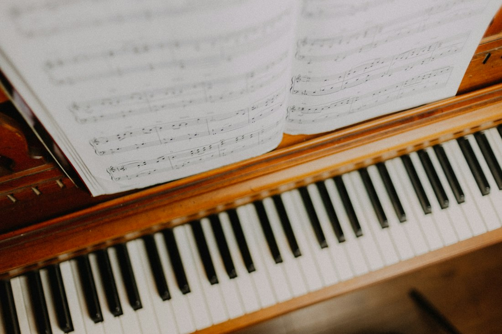
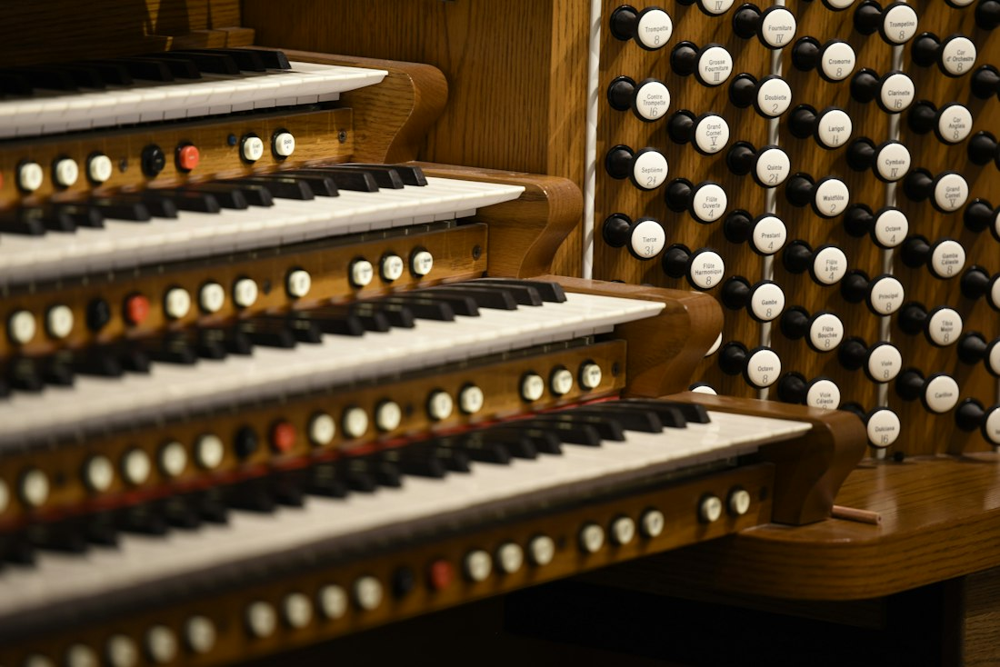

Voice Lessons
Classical voice performance instruction for students ages 12 and up, building healthy technique and confident, expressive singing.
Carol Ann Mancini · Mancini Music Studio · Wadsworth, Ohio
Voice and piano teacher, organist, and choir director, sharing classical and sacred music for six decades.
Book a lesson Lessons & servicesCarol Ann Mancini began playing the organ for Sunday liturgies in Milford, Massachusetts, in 1965, and music has been at the center of her life ever since. Today she is Choir Director and Organist at St. Andrew the Apostle Parish in Norton, Ohio. She has taught piano and voice since 1990, and at Mancini Music Studio in Wadsworth her students share their progress at a recital each year.
Carol trained in classical organ at St. Paul's Cathedral in Worcester, Massachusetts (MA), with Mr. Luke Richard, and studied classical voice with Estelle McCausland and with international opera singer Luisa Valasco Westfall. As a soprano soloist, she has sung Handel's Messiah and Fauré's Requiem, and she performed Mozart's Vesperae solennes de confessore with the Toledo Chamber Orchestra. She also sang Bach's Mass in B minor as a member of the Toledo Symphony Chorale.
Whether she is preparing a student for a college audition, leading a choir through Holy Week, or playing for a wedding, Carol brings the same care, patience, and love of music.


Private instruction for young students and adults alike, and music for life's most meaningful occasions.
Classical voice performance instruction for students ages 12 and up, building healthy technique and confident, expressive singing.
Focused preparation for regional competitions and college entrance auditions, from choosing repertoire to performance day.
Lessons for students ages 7 and up, from beginners through intermediate players, with music theory woven into every step.
Every student has the chance to perform in the studio's annual recital, a proud moment to share with family and friends.
Organist and soprano soloist for weddings, funerals, and memorial services, with music thoughtfully chosen together with each family.
Choir direction, cantoring, and substitute organist services for Sunday liturgies, Confirmation, Christmas, Holy Week, and Easter.
A career in teaching, church music, and classical performance.
Interested in voice or piano lessons, audition preparation, or music for a wedding or funeral? Carol would love to hear from you.
Call (landline)
(330) 590-1161Location
Wadsworth, Ohio
Follow along
Carol on Facebook (opens in a new tab)Piano lessons for students ages 7 and up, and voice lessons for ages 12 and up. New students are welcome; fall lessons begin each September.